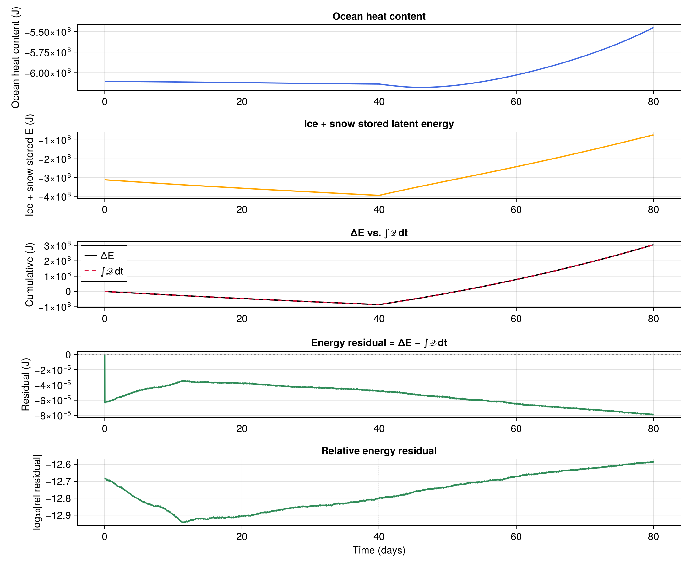

Coupled energy conservation
In this example, we run a minimal-physics OceanSeaIceModel through a freeze-then-melt cycle and verify that the coupled energy budget closes. The setup is a single ocean column with thermodynamics-only sea ice, a snow layer on top of the ice, and a uniform prescribed atmosphere. We drive two 30-day phases: a cold phase with light snowfall that grows the ice, and a warm phase with rainfall that melts it.
The invariant we check at the end of the run is
\[ΔE = \int 𝒬 \mathrm{d}t\]
where $E = ℋᵒᶜ + E_{is}$, with $ℋᵒᶜ$ the ocean heat content, $E_{is}$ the combined ice and snow stored latent energy, and $𝒬$ is the atmospheric heat flux into the coupled system. Closure to machine precision requires that every internal flux cancels exactly between the components.
Install dependencies
using Pkg
pkg"add Oceananigans, NumericalEarth, ClimaSeaIce, CairoMakie"using Oceananigans
using Oceananigans.Units
using Oceananigans.Operators: Azᶜᶜᶜ
using ClimaSeaIce
using ClimaSeaIce.SeaIceThermodynamics: latent_heat
using NumericalEarth
using NumericalEarth.Diagnostics: atmosphere_ocean_heat_flux, frazil_heat_flux
using NumericalEarth.EarthSystemModels: update_state!
using CairoMakie
using Printf[ Info: Oceananigans will use 8 threads
Constant latent heat for diagnostic closure
ClimaSeaIce's slab mass balance uses a temperature-dependent latent heat, ℒ(T) = ℒ₀ + (ρℓ * cℓ / ρi − ci)(T − T₀), with ℰu = ρi * ℒ(T_u) at the top interface and ℰb = ρi * ℒ(T_b) at the bottom. A single state-based Eᵢₛ = − ℵ * ρi * ℒ * h * Az cannot simultaneously match freeze at T_b and top-melt at 0 ᵒC: the 4.7 kJ/kg gap accounts for a ~1% residual scaling with top-melt mass. To isolate coupler-side bookkeeping from this intrinsic ℒ(T) mismatch we locally override latent_heat to the constant pt.reference_latent_heat. This is a diagnostic choice for the present example and does not modify upstream.
@inline ClimaSeaIce.SeaIceThermodynamics.latent_heat(pt::ClimaSeaIce.SeaIceThermodynamics.PhaseTransitions, T) =
pt.reference_latent_heatGrid, ocean, sea ice, atmosphere, and radiation
We build a single ocean column, 100 m deep, with 10 vertical levels on a (Flat, Flat, Bounded) RectilinearGrid. The ocean is initialized just above freezing at S = 34, without advection nor Coriolis and with CATKEVerticalDiffusivity providing vertical mixing.
arch = CPU()
grid = RectilinearGrid(arch; size = 10, z = (-100, 0), topology = (Flat, Flat, Bounded))
ocean = ocean_simulation(grid;
momentum_advection = nothing,
tracer_advection = nothing,
coriolis = nothing,
radiative_forcing = nothing,
closure = CATKEVerticalDiffusivity(),
bottom_drag_coefficient = 0)
Sᵢ = 34.0 # psu
Tᵢ = -1.5 # ᵒC, just above freezing at S = 34 psu
set!(ocean.model, T = Tᵢ, S = Sᵢ)Sea ice only includes thermodynamics and is initialized with h = 1 m, ℵ = 1, and a 0.1 m snow layer.
sea_ice = sea_ice_simulation(grid, ocean;
dynamics = nothing,
advection = nothing)
set!(sea_ice.model, h = 1, ℵ = 1, hs = 0.1)The atmosphere and radiation are prescribed and spatially uniform and they both live on a scalar grid. We overwrite the parent array of their variables in place at the start of each phase.
surface_grid = slice(grid, :, :, 1)
times = [0.0, 1e9]
atmosphere = PrescribedAtmosphere(surface_grid, times)
radiation = PrescribedRadiation(surface_grid, times)
coupled_model = OceanSeaIceModel(ocean, sea_ice; atmosphere, radiation)EarthSystemModel{CPU}(time = 0 seconds, iteration = 0)
├── radiation: 1×1×1×2 PrescribedRadiation
├── atmosphere: 1×1×1×2 PrescribedAtmosphere{Float64}
├── land: Nothing
├── sea_ice: SeaIceModel{CPU, RectilinearGrid}(time = 0 seconds, iteration = 0)
├── ocean: HydrostaticFreeSurfaceModel{CPU, RectilinearGrid}(time = 0 seconds, iteration = 0)
└── interfaces: ComponentInterfacesHelpers
set_forcing! fills every FieldTimeSeries of the prescribed atmosphere and prescribed radiation with scalar constants so the forcing is spatio-temporally uniform.
function set_forcing!(atmosphere, radiation, T, q, u, v, p, ℐꜜˢʷ, ℐꜜˡʷ, Jᶜ, Jˢⁿ)
fill!(parent(atmosphere.temperature), T )
fill!(parent(atmosphere.specific_humidity), q )
fill!(parent(atmosphere.velocities.u), u )
fill!(parent(atmosphere.velocities.v), v )
fill!(parent(atmosphere.pressure), p )
fill!(parent(atmosphere.precipitation_flux.rain), Jᶜ )
fill!(parent(atmosphere.precipitation_flux.snow), Jˢⁿ )
fill!(parent(radiation.downwelling_shortwave), ℐꜜˢʷ)
fill!(parent(radiation.downwelling_longwave), ℐꜜˡʷ)
return nothing
endset_forcing! (generic function with 1 method)Physical constants are read directly from the coupled model so the budget diagnostics stay consistent with the constants the model itself is using. Az is the horizontal cell area (unity for (Flat, Flat, Bounded)).
ρi = coupled_model.sea_ice.model.sea_ice_density[1, 1, 1]
ρs = coupled_model.sea_ice.model.snow_density[1, 1, 1]
ℒ₀ = ClimaSeaIce.SeaIceThermodynamics.latent_heat(coupled_model.sea_ice.model.phase_transitions, 0.0)
ρᵒᶜ = coupled_model.interfaces.ocean_properties.reference_density
cᵒᶜ = coupled_model.interfaces.ocean_properties.heat_capacity
Az = Azᶜᶜᶜ(1, 1, 1, grid)1.0Volume integral of the ocean temperature, built once and re-used every step via compute!. The underlying Integral operation keeps a reference to the live T field, so each compute! re-evaluates over the current state.
∫T = Field(Integral(ocean.model.tracers.T))1×1×1 Field{Nothing, Nothing, Nothing} reduced over dims = (1, 2, 3) on Oceananigans.Grids.RectilinearGrid on CPU
├── data: OffsetArrays.OffsetArray{Float64, 3, Array{Float64, 3}}, size: (1, 1, 1)
├── grid: 1×1×10 RectilinearGrid{Float64, Flat, Flat, Bounded} on CPU with 0×0×3 halo
├── operand: Integral of BinaryOperation at (Center, Center, Center) over dims (1, 2, 3)
├── status: time=0.0
└── data: 1×1×1 OffsetArray(::Array{Float64, 3}, 1:1, 1:1, 1:1) with eltype Float64 with indices 1:1×1:1×1:1
└── max=-150.0, min=-150.0, mean=-150.0column_state returns a snapshot of the diagnostic quantities we track: ice and snow geometry, the ice+snow stored latent energy, and the ocean heat content.
function column_state(coupled_model)
h = first(coupled_model.sea_ice.model.ice_thickness)
ℵ = first(coupled_model.sea_ice.model.ice_concentration)
hs = first(coupled_model.sea_ice.model.snow_thickness)
Eᵢₛ = -ℵ * (ρi * ℒ₀ * h + ρs * ℒ₀ * hs) * Az
ℋᵒᶜ = ρᵒᶜ * cᵒᶜ * first(compute!(∫T))
return (; h, ℵ, hs, Eᵢₛ, ℋᵒᶜ)
endcolumn_state (generic function with 1 method)net_top_heat_flux returns the atmospheric energy input to the coupled (ice + ocean) system in Watts: Q_atm = − (ΣQt + ΣQao) * Az, where ΣQt is the sea-ice top heat flux per cell and ΣQao is the per-cell atmosphere-to-ocean flux over the open-water fraction. The ocean-side piece comes from atmosphere_ocean_heat_flux, which subtracts the frazil and interface contributions internally so it never picks up a spurious ocean / ice exchange term.
function net_top_heat_flux(coupled_model)
ΣQt = first(coupled_model.interfaces.net_fluxes.sea_ice.top.heat)
ΣQao = first(atmosphere_ocean_heat_flux(coupled_model))
return - (ΣQt + ΣQao) * Az
endnet_top_heat_flux (generic function with 1 method)Running the freeze-melt cycle
We run two 40-day phases at Δt = 20 min: a cold phase with light snowfall that grows the ice, then a warm phase with rain and strong radiation that melts it back. The run is driven by a single Simulation spanning the full cycle. Two callbacks do the bookkeeping: budget_callback records state at every step, and phase_switch_callback swaps the atmosphere from freeze to melt at t = Δτ.
Δt = 20minutes
Δτ = 40days
simulation = Simulation(coupled_model; Δt, stop_time = 2Δτ)
freeze_phase = (T = 253.15,
q = 1.0e-4,
u = 2.0,
v = 0.0,
p = 101325.0,
ℐꜜˢʷ = 50.0,
ℐꜜˡʷ = 180.0,
Jᶜ = 0.0,
Jˢⁿ = 1.0e-5)
melt_phase = (T = 278.15,
q = 5.0e-3,
u = 2.0,
v = 0.0,
p = 101325.0,
ℐꜜˢʷ = 250.0,
ℐꜜˡʷ = 320.0,
Jᶜ = 5.0e-6,
Jˢⁿ = 0.0)(T = 278.15, q = 0.005, u = 2.0, v = 0.0, p = 101325.0, ℐꜜˢʷ = 250.0, ℐꜜˡʷ = 320.0, Jᶜ = 5.0e-6, Jˢⁿ = 0.0)We keep a history of the budget-relevant quantities at every time step.
history = (t = Float64[],
phase = Int[],
h = Float64[],
ℵ = Float64[],
hs = Float64[],
Eᵢₛ = Float64[],
ℋᵒᶜ = Float64[],
𝒬 = Float64[],
𝒬ᶠʳᶻ = Float64[])
function record!(history, coupled_model, phase_id, 𝒬)
st = column_state(coupled_model)
𝒬f = first(frazil_heat_flux(coupled_model))
push!(history.t, coupled_model.clock.time)
push!(history.phase, phase_id)
push!(history.h, st.h)
push!(history.ℵ, st.ℵ)
push!(history.hs, st.hs)
push!(history.Eᵢₛ, st.Eᵢₛ)
push!(history.ℋᵒᶜ, st.ℋᵒᶜ)
push!(history.𝒬, 𝒬)
push!(history.𝒬ᶠʳᶻ, 𝒬f)
return nothing
endrecord! (generic function with 1 method)The budget_callback reads the current phase_ctx — a small mutable box holding the current phase id and the snowfall enthalpy 𝒬ᵖ to add to the net atmospheric flux. phase_switch_callback is the one that updates this context at the phase boundary.
phase_ctx = Ref((; phase_id = 1, 𝒬ᵖ = - freeze_phase.Jˢⁿ * ℒ₀ * Az))
function budget_callback(simulation)
ctx = phase_ctx[]
𝒬 = net_top_heat_flux(simulation.model) + ctx.𝒬ᵖ
record!(history, simulation.model, ctx.phase_id, 𝒬)
return nothing
endbudget_callback (generic function with 1 method)At t = Δτ the atmosphere swaps from freeze to melt. update_state! would zero the pending frazil flux (the ocean is at Tₘ, no supercooling), stranding the latent energy already deposited into the ocean by the last freeze step's frazil mutation. We preserve 𝒬ᶠʳᶻ across the refresh and add it back into the sea-ice bottom heat flux that the slab will read. The callback also overwrites the just-recorded Q entry with the melt-phase starting flux, which is the flux that will drive the next step under rectangle-at-start integration.
Oceananigans fires every scheduled callback once at initialization to sync its schedule, so we guard against the t = 0 fire — we only want to switch at the actual phase boundary.
function phase_switch_callback(simulation)
simulation.model.clock.time < Δτ && return nothing
set_forcing!(atmosphere, radiation, melt_phase.T, melt_phase.q, melt_phase.u, melt_phase.v,
melt_phase.p, melt_phase.ℐꜜˢʷ, melt_phase.ℐꜜˡʷ, melt_phase.Jᶜ, melt_phase.Jˢⁿ)
𝒬ᵖ = - melt_phase.Jˢⁿ * ℒ₀ * Az
𝒬ᶠʳᶻ = simulation.model.interfaces.sea_ice_ocean_interface.fluxes.frazil_heat
ΣQb = simulation.model.interfaces.net_fluxes.sea_ice.bottom.heat
𝒬⁻ = first(𝒬ᶠʳᶻ) # pending frazil
update_state!(simulation.model)
interior(𝒬ᶠʳᶻ, 1, 1, 1) .= 𝒬⁻
interior(ΣQb, 1, 1, 1) .+= 𝒬⁻
phase_ctx[] = (; phase_id = 2, 𝒬ᵖ)
history.𝒬[end] = net_top_heat_flux(simulation.model) + 𝒬ᵖ
return nothing
end
add_callback!(simulation, budget_callback, IterationInterval(1))
add_callback!(simulation, phase_switch_callback, SpecifiedTimes([Δτ]))Initialize the coupler for the freeze atmosphere. Oceananigans' run! will re-run update_state! at init and then fire budget_callback once, which serves as the t = 0 seed entry for the history.
set_forcing!(atmosphere, radiation, freeze_phase.T, freeze_phase.q, freeze_phase.u, freeze_phase.v,
freeze_phase.p, freeze_phase.ℐꜜˢʷ, freeze_phase.ℐꜜˡʷ, freeze_phase.Jᶜ, freeze_phase.Jˢⁿ)
@info "Running $(simulation.stop_time / days)-day coupled freeze/melt cycle…"
run!(simulation)[ Info: Running 80.0-day coupled freeze/melt cycle…
[ Info: Initializing simulation...
[ Info: ... simulation initialization complete (1.446 seconds)
[ Info: Executing initial time step...
[ Info: ... initial time step complete (14.495 seconds).
[ Info: Simulation is stopping after running for 38.321 seconds.
[ Info: Simulation time 80 days equals or exceeds stop time 80 days.
Budget analysis
Cumulative atmospheric input uses rectangle-at-start integration to match what the coupler actually applied during each step.
t = history.t
τ = t ./ day # days axis
∫𝒬 = similar(t)
∫𝒬[1] = 0.0
for n in 2:length(t)
∫𝒬[n] = ∫𝒬[n-1] + history.𝒬[n-1] * (t[n] - t[n-1])
endThe frazil mass gain is deposited by compute_sea_ice_ocean_fluxes! at the end of step n (mutating ocean T and writing 𝒬ᶠʳᶻ) but the corresponding ice mass gain is consumed only during step n + 1. At a diagnostic snapshot the ocean shows the warming while the ice has not yet grown. We anticipate this one-step pending quantity by adding 𝒬ᶠʳᶻ(n) * Δt⁺ * Az, where Δt⁺ = t[n+1] - t[n], to Eᵢₛ[n] so the energy budget closure is not polluted by bookkeeping lag.
Δt⁺ = similar(t)
for n in 1:(length(t) - 1)
Δt⁺[n] = t[n+1] - t[n]
end
Δt⁺[end] = Δt⁺[end-1]
δE = history.𝒬ᶠʳᶻ .* Δt⁺ .* Az
Ẽᵢₛ = history.Eᵢₛ .+ δE
ΔE = (Ẽᵢₛ .+ history.ℋᵒᶜ) .- (Ẽᵢₛ[1] + history.ℋᵒᶜ[1])
R = ΔE .- ∫𝒬Visualizing the budget
The plot shows the two stored components (ocean heat content and ice+snow stored latent energy), the cumulative match between ΔE and ∫𝒬 dt, and the residual on both absolute and relative log scales.
set_theme!(Theme(fontsize=16, linewidth=2))
fig = Figure(size=(1100, 900))
ax1 = Axis(fig[1, 1], ylabel = "Ocean heat content (J)", title = "Ocean heat content")
ax2 = Axis(fig[2, 1], ylabel = "Ice + snow stored E (J)", title = "Ice + snow stored latent energy")
ax3 = Axis(fig[3, 1], ylabel = "Cumulative (J)", title = "ΔE vs. ∫𝒬 dt")
ax4 = Axis(fig[4, 1], ylabel = "Residual (J)", title = "Energy residual = ΔE − ∫𝒬 dt")
ax5 = Axis(fig[5, 1], ylabel = "log₁₀|rel residual|", title = "Relative energy residual", xlabel = "Time (days)", )
lines!(ax1, τ, history.ℋᵒᶜ, color = :royalblue)
lines!(ax2, τ, history.Eᵢₛ, color = :orange)
lines!(ax3, τ, ΔE, label = "ΔE", color = :black)
lines!(ax3, τ, ∫𝒬, label = "∫𝒬 dt", color = :crimson, linestyle = :dash)
axislegend(ax3, position = :lt)
lines!(ax4, τ, R, color = :seagreen)
hlines!(ax4, [0], color = :gray, linestyle = :dot)
ε = log10.(abs.(R ./ max(maximum(abs.(ΔE)), 1)))
lines!(ax5, τ[2:end], ε[2:end], color = :seagreen)
for ax in (ax1, ax2, ax3, ax4, ax5)
vlines!(ax, [Δτ / day], color = :gray, linestyle = :dot, linewidth = 1)
end
save("coupled_conservation_energy.png", fig)
Per-phase summary
nᶠ = findlast(p -> p == 1, history.phase)
ΔEᶠ = Ẽᵢₛ[nᶠ] + history.ℋᵒᶜ[nᶠ] - Ẽᵢₛ[1] - history.ℋᵒᶜ[1]
ΔEᵐ = Ẽᵢₛ[end] + history.ℋᵒᶜ[end] - Ẽᵢₛ[nᶠ] - history.ℋᵒᶜ[nᶠ]
∫𝒬ᶠ = ∫𝒬[nᶠ]
∫𝒬ᵐ = ∫𝒬[end] - ∫𝒬[nᶠ]
@printf(" freeze: ΔE = %+.3e J ∫𝒬 dt = %+.3e J residual = %+.2e (%.1e rel)\n",
ΔEᶠ, ∫𝒬ᶠ, ΔEᶠ - ∫𝒬ᶠ, abs(ΔEᶠ - ∫𝒬ᶠ) / max(abs(ΔEᶠ), 1))
@printf(" melt : ΔE = %+.3e J ∫𝒬 dt = %+.3e J residual = %+.2e (%.1e rel)\n",
ΔEᵐ, ∫𝒬ᵐ, ΔEᵐ - ∫𝒬ᵐ, abs(ΔEᵐ - ∫𝒬ᵐ) / max(abs(ΔEᵐ), 1))
@printf(" full-cycle relative residual: %.1e\n", abs(R[end]) / max(maximum(abs.(ΔE)), 1)) freeze: ΔE = -8.591e+07 J ∫𝒬 dt = -8.591e+07 J residual = -4.84e-05 (5.6e-13 rel)
melt : ΔE = +3.905e+08 J ∫𝒬 dt = +3.905e+08 J residual = -3.04e-05 (7.8e-14 rel)
full-cycle relative residual: 2.6e-13
This page was generated using Literate.jl.